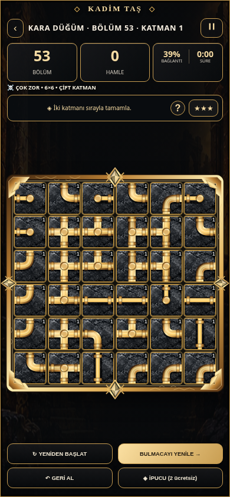
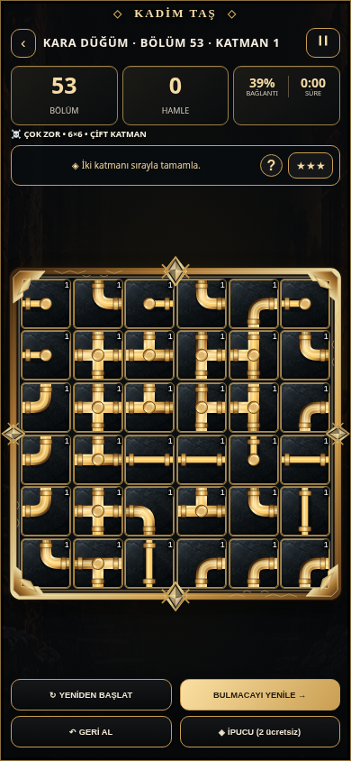
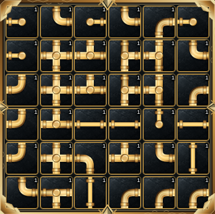

Daha sakin obsidyen yüzey, ince altın kenar ve kontrollü derinlik. Yoğun tahtalarda sade gradyan. Sabit taşların işaretleri ve özel mekanik simgeleri korunur.
Mevcut boru şekilleri ve enerji renkleri aynı kalır. Üst yansıma belirginleşir; koyu gölge hafifler.
Mevcut fantastik sahne korunur. Tahtanın çevresindeki düşük yoğunluklu altın ışık, odak noktasını güçlendirir.
Örnekler görsel geri bildirimi gösterir; bir oyun işlemi veya gerçek ödül oluşturmaz.
Küçük/orta tahtalarda tek seferlik %3,5 küçülme. 7×7–8×8 tahtalarda ölçek animasyonu kapalı.

Çerçevede tek sıcak ışık vurgusu; sürekli parçacık yok.
Hafif yukarı giriş ve saydamlık. Hareketi azalt tercihinde animasyonlar kapanır.